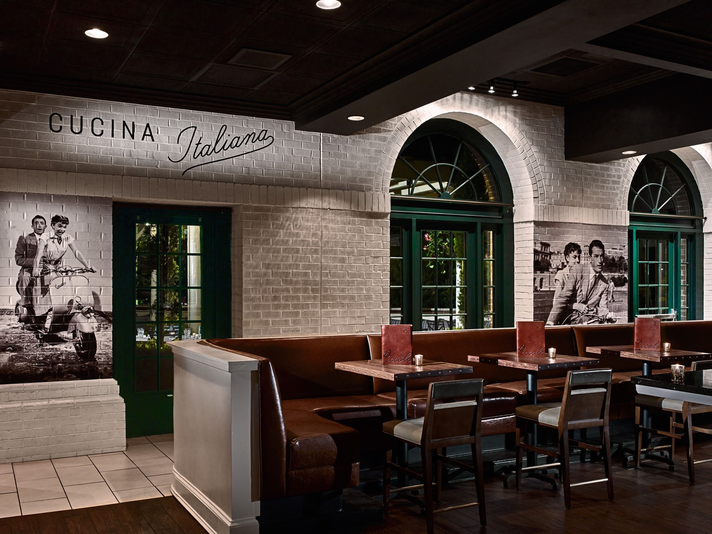

La storia
Named for a hilltop town of palaces, vineyards and poets.
Ariccia Cucina Italiana opened in 2004 in partnership with Auburn University and its sister campus in Ariccia, Italy, home to the Joseph S. Bruno Auburn Abroad in Italy program.
We honor classic central Italian cuisine: the freshest seasonal products, Italian meats and cheeses, signature porchetta, house-made focaccia and Auburn's best wood-fired pizzas. Dine by candlelight inside, or al fresco in a “secret garden” of hedges, a large fountain and a pergola strung with twinkle lights.
Dustin WhitfieldExecutive Chef de Cuisine, Ariccia Cucina Italiana
2004Opened with Auburn University and its campus in Ariccia, Italy
1,500Bottles in the cellar
8 hrsSlow roast for every Porchetta di Ariccia
2022Best of Bama, Best Brunch